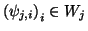
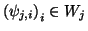
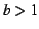
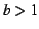

La définition est la même que pour les fonctions exception faite de la propriété d'échelle. Prenons pour exemple , alors les ondelettes doivent être des vecteurs formant des bases de Riesz et ayant une masse nulle. Pour des raisons pratiques, on requiert que les ondelettes soient locales.
Condition 1. Une base d'ondelette doit inclure des bases de Riesz
pour une famille de sous-espaces  dans
,
on note ces bases de Riesz (3.3)

et on doit pouvoir écrire
où est le nombre de sous-espaces. Par la condition de Riesz,
nous avons que
dans
,
on note ces bases de Riesz (3.3)

et on doit pouvoir écrire
où est le nombre de sous-espaces. Par la condition de Riesz,
nous avons que
 .
Le sous-espace restant
.
Le sous-espace restant  ne peut pas être représenté en utilisant
les vecteurs
et est parfois appelé le sous-espace d'échelle.
ne peut pas être représenté en utilisant
les vecteurs
et est parfois appelé le sous-espace d'échelle.
Condition 2. Toutes les ondelettes doivent avoir une masse nulle .
Condition 3. Les ondelettes doivent être locales. Définissons la taille
du support d'un vecteur comment étant le plus petit entier  tel qu'il existe avec la propriété que ou est hors
plage pour tous les . Il doit exister
tel qu'il existe avec la propriété que ou est hors
plage pour tous les . Il doit exister  et un entier 
telle que le taille du support de
est plus petite ou
égale à et tel que
.
et un entier 
telle que le taille du support de
est plus petite ou
égale à et tel que
.
On peut réduire le première condition en remplaçant « base de Riesz » par « repère » (3.5).